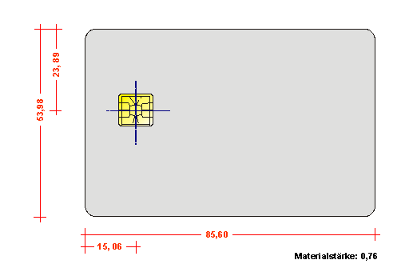
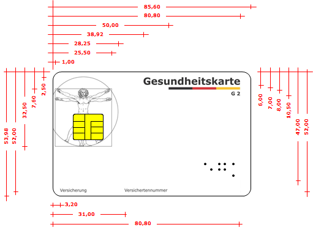
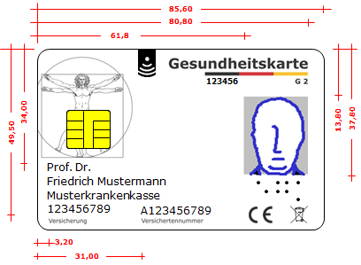
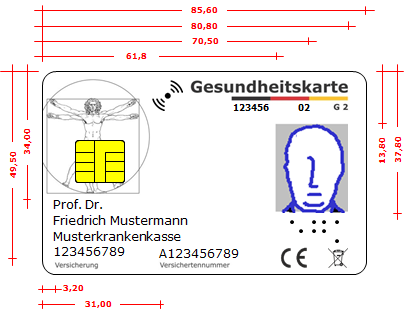
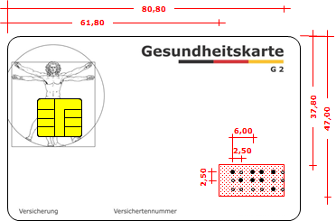
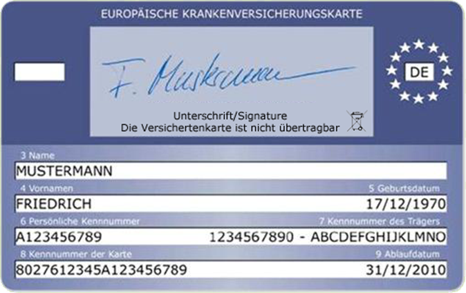

Elektronische Gesundheitskarte und Telematikinfrastruktur
Die Spezifikation der
elektronischen Gesundheitskarte
Äußere Gestaltung
| Version | 3.10.0 |
| Revision | 571891 |
| Stand | 02.10.2019 |
| Status | freigegeben |
| Klassifizierung | öffentlich |
| Referenzierung | gemSpec_eGK_Opt |
Änderungen zur Vorversion
Anpassungen des vorliegenden Dokumentes im Vergleich zur Vorversion können Sie der nachfolgenden Tabelle entnehmen.
Dokumentenhistorie
| Version |
Stand |
Kap./ Seite |
Grund der Änderung, besondere Hinweise |
Bearbeitung |
|---|---|---|---|---|
| 2.1.0 |
20.12.07 |
freigegeben Die Version 2.1.0 der Spezifikation für die Generation 1 aus Rel. 0.5.2/0.5.3 (Basis-Rollout) ist Grundlage der vorliegenden Spezifikation. Die Dokumentenhistorie der Version 2.1.0 ist nicht in dieses Dokument übernommen worden; sie kann bei Bedarf dort eingesehen werden. |
gematik |
|
| 3.0.0 |
11.12.12 |
Einarbeitung der Generation 2 Anforderungen, Gesellschafterkommentierung |
gematik |
|
| 3.3.0 |
21.02.14 |
Ergänzung um Amendments zu den Normen ISO 7810 und ISO 10373-1 bei Prüfung elektrophysikalische Eigenschaften |
gematik |
|
| 3.4.0 |
06.06.14 |
Einarbeitung Änderungen Iteration 3 |
gematik |
|
| 3.4.1 |
28.10.14 |
Aktualisierung Inhaltsverzeichnis |
gematik |
|
| 3.5.1 |
21.04.17 |
Kartengeneration 2.1 |
||
| 3.6.0 |
26.10.18 |
Einarbeitung C_6549 |
gematik |
|
| 3.7.0 |
28.11.18 |
Einarbeitung Änderungsliste P15.11 |
gematik |
|
| 3.8.0 | 15.05.19 | Einarbeitung Änderungsliste P18.1 |
gematik |
|
| 3.9.0 | 28.06.19 | Einarbeitung Änderungsliste P19.1 |
gematik |
|
| Einarbeitung Änderungsliste P 20.1 | gematik | |||
| 3.10.0 | 02.10.19 | freigegeben | gematik |
Dieses Dokument beschreibt die Gestaltung der Vorderseite und der Rückseite sowie die Anforderungen an die physikalischen Eigenschaften der eGK.
Es werden die Bereiche auf der eGK festgelegt, in denen Lichtbild des Versicherten, Texte und Logos vorgesehen sind, und die dazugehörenden Formate definiert. Die Kartenrückseite kann entsprechend den Vorgaben für die europäische Krankenversicherungskarte (EHIC) bedruckt sein.
Dieses Dokument richtet sich an Hersteller, Herausgeber und Personalisierer von elektronischen Gesundheitskarten (eGK).
Für die Qualitätskontrolle der eGK werden die zu berücksichtigenden Tests des Kartenkörpers beschrieben.
Dieses Dokument enthält normative Festlegungen zur Telematikinfrastruktur des Deutschen Gesundheitswesens für die Gestaltung der Karten der Generation 2. Der Gültigkeitszeitraum der vorliegenden Version und deren Anwendung in Zulassungs- oder Abnahmeverfahren wird durch die gematik GmbH in gesonderten Dokumenten (z.B. Dokumentenlandkarte, Produkttypsteckbrief, Leistungsbeschreibung) festgelegt und bekannt gegeben.
Schutzrechts-/Patentrechtshinweis
Die nachfolgende Spezifikation ist von der gematik allein unter technischen Gesichtspunkten erstellt worden. Im Einzelfall kann nicht ausgeschlossen werden, dass die Implementierung der Spezifikation in technische Schutzrechte Dritter eingreift. Es ist allein Sache des Anbieters oder Herstellers, durch geeignete Maßnahmen dafür Sorge zu tragen, dass von ihm aufgrund der Spezifikation angebotene Produkte und/oder Leistungen nicht gegen Schutzrechte Dritter verstoßen und sich ggf. die erforderlichen Erlaubnisse/Lizenzen von den betroffenen Schutzrechtsinhabern einzuholen. Die gematik GmbH übernimmt insofern keinerlei Gewährleistungen.
Die elektrischen Eigenschaften des Chips der eGK werden in anderen Dokumenten beschrieben.
Anforderungen als Ausdruck normativer Festlegungen werden durch eine eindeutige ID sowie die dem [RFC2119] entsprechenden, in Großbuchstaben geschriebenen deutschen Schlüsselworte MUSS, DARF NICHT, SOLL, SOLL NICHT, KANN gekennzeichnet
Sie werden im Dokument wie folgt dargestellt:
<AFO-ID> - <Titel der Afo>
Text / Beschreibung
[<=]
Dabei umfasst die Anforderung sämtliche zwischen Afo-ID und der Textmarke [<=] angeführten Inhalte.
Da im Beispielsatz „Eine leere Liste DARF NICHT ein Element besitzen.“ die Phrase „DARF NICHT“ semantisch irreführend wäre (wenn nicht ein, dann vielleicht zwei?), wird in diesem Dokument stattdessen „Eine leere Liste DARF KEIN Element besitzen.“ verwendet.
Card-G2-A_2230
Für die eGK MÜSSEN Karten des Typs ID-1 verwendet werden.
<=Card-G2-A_2231
Die exakten Maßangaben des Kartenkörpers für die eGK sowie die jeweiligen Maßtoleranzen MÜSSEN der zuständigen Norm [ISO7810] entnommen werden, die Angaben zur Lage der Kontakte der Norm [ISO7816-2].
<=

Abbildung 1: Abb_eGKOPT_1 – Abmessungen der eGK und Lage der Kontakte gemäß [ISO7810], Maße in mm
Card-G2-A_2232
Die Größe des Chip-Moduls der eGK ist abhängig vom verwendeten Modul-Layout und MUSS so bemessen sein, dass spezifizierte eGK-Merkmale nicht großflächig verdeckt werden
<=Die mögliche Abdeckung betrifft im Wesentlichen die Abbildung des „Leonardo“ (siehe Kap. 2.2.1.1.1)
Hinweis (1) Für die in der jeweiligen ISO-/IEC-Norm bzw. in den referenzierten technischen Bestimmungen zur europäischen Krankenversicherungskarte [Beschluss S2] festgelegten Maße gelten ausschließlich die dort festgelegten Werte. Alle aus diesen Normen abgeleiteten Maße in diesem Dokument haben informativen Charakter und dienen der Veranschaulichung.
Die Kartenherausgeber legen zu den Gesundheitskarten-spezifischen Vorgaben (siehe Abbildungen Abb_eGKOPT_3, Abb_eGKOPT_5 und Abb_eGKOPT_6) die Toleranzen fest. Als Toleranz für alle Maße wird +/- 0,5 mm als ausreichend angesehen.
Die Toleranzen gelten für die Vorderseite und für die Rückseite der Karte.
Card-G2-A_2233
Für den typographischen DTP-Punkt, abgekürzt ‚pt‘, der in diesem Dokument zur Festlegung der jeweiligen Schriftgröße verwendet wird, MUSS als Maß der 864. Teil des englischen Kompromissfußes von 1959 genutzt werden. Er misst exakt 1⁄72 Zoll, d. h. 0,0138 Zoll oder 0,3528 mm.
<=Festlegung der Schrifttypen für die Vorderseite und Rückseite der eGK, falls keine EHIC auf die Rückseite gedruckt wird (siehe auch [Card-G2-A_2304] und [Card-G2-A_2305]):
Card-G2-A_2234
Für die Bedruckung der eGK MUSS mit Ausnahme des Feldes 5 „Personalisierung“ der Abbildung Abb_eGKOPT_2 die Schrifttype „Verdana True Type“, Laufweite „normal“, Skalierung 100%, verwendet werden.
<=Card-G2-A_2235
Im Feld „Personalisierung“, Feld 5 der eGK gemäß Abbildung Abb_eGKOPT_2, MUSS die Schrifttype „Verdana True Type“, Laufweite „normal“, Skalierung 85 - 100%, verwendet werden.
<=Festlegung der Schrifttypen für die Rückseite der eGK (falls eine EHIC auf die Rückseite gedruckt wird):
Es gelten die Vorgaben von [Beschluss S2].
Card-G2-A_2236
Die Vorderseite der eGK MUSS gemäß Abbildung Abb_eGKOPT_2 grundsätzlich in sieben Felder gegliedert werden.
Abbildung 2: Abb_eGKOPT_2 – Felder der Kartenvorderseite mit Bemaßung, Maße in mm.
Card-G2-A_2237
Feld 1 der eGK gemäß Abbildung Abb_eGKOPT_2 MUSS das über alle eGK einheitliche Logo „Leonardo“ als Erkennungsmerkmal enthalten.
<=Card-G2-A_2238
Feld 2 der eGK gemäß Abbildung Abb_eGKOPT_2 MUSS die über alle eGK einheitlichen Kartenbezeichnungen „Gesundheitskarte“ und „G 2“ enthalten.
<=Card-G2-A_2883
Feld 2 der eGK MUSS die CAN enthalten. Diese MUSS mit dem Attribut can des Objekts SK.CAN übereinstimmen.
<=
Card-G2-A_2884
Zur optischen Unterscheidbarkeit von Folgekarten KANN Feld 2 der eGK eine 2-stellige Folgenummer enthalten.
<=Card-G2-A_2239
Feld 3 der eGK gemäß Abbildung Abb_eGKOPT_2 MUSS das Lichtbild des Karteninhabers enthalten (Ausnahmen sind in [Card-G2-A_2268] definiert).
<=A_18369
Feld 4 der eGK gemäß Abbildung Abb_eGKOPT_2 KANN die Buchstaben „egk“ in Braille-Schrift sowie Kennzeichen (beispielsweise Symbole) zur Kennzeichnung der Konformität der eGK zu kennzeichnungspflichtigen Richtlinien und Verordnungen enthalten
Das Feld 4 KANN weitere Angaben enthalten. <=
Card-G2-A_2241
Feld 5 der eGK gemäß Abbildung Abb_eGKOPT_2 MUSS die bei der Personalisierung aufzubringenden Daten des Karteninhabers enthalten.
<=Card-G2-A_2242
Feld 6 der eGK gemäß Abbildung Abb_eGKOPT_2 KANN das Logo des ausstellenden Kostenträgers und ggf. spezifische Angaben enthalten
<=A_18020
Feld 7 der eGK KANN gemäß Abb_eGKOPT_2 das Symbol für die kontaktlose Verwendung der eGK enthalten. <=
Gemeinsam ergeben die Felder das einheitliche und unverwechselbare Erkennungszeichen der eGK und sind in ihrer Lage und Größe festgelegt.
Card-G2-A_2243
Bezüglich des optischen Layouts der eGK gilt die Feldaufteilung gemäß Abbildung Abb_eGKOPT_2 als Grundschema. Die Grenzen von Feld 6 KÖNNEN unter Wahrung der für die Felder 1 bis 5 und 7 beschriebenen Vorgaben überschritten und über die gesamte eGK ausgedehnt werden.
In diesem Fall wird empfohlen, durch geeignete Farbwahl sicherzustellen, dass die Elemente und Konturen in den Feldern 1 bis 5 und 7 klar und deutlich erkennbar bleiben.
<=
Die Standardvorlage der Vorderseite der elektronischen Gesundheitskarte ist in Weiß gehalten und beinhaltet folgende Elemente:

Abbildung 3 Abb_eGKOPT_3 – Unveränderbare Elemente der Kartenvorderseite mit Bemaßung, Maße in mm
Zur Bemaßung der (optionalen) Braille-Kennzeichnung siehe Kap. 2.2.2.
Das Layout der Kartenvorderseite wird geprägt durch die im Folgenden aufgeführten unveränderbaren Elemente der elektronischen Gesundheitskarte (minimale Anforderungen als Sicherheitsmerkmal).
Bildvorlagen für die unveränderlichen Elemente des Layouts der eGK und das Symbol für die kontaktlose Verwendung der eGK sind im Downloadbereich des gematik-Fachportals (https://fachportal.gematik.de/spezifikationen) verfügbar.
Eine Darstellung des Menschen in den Proportionen des goldenen Schnittes, nach einer Zeichnung von Leonardo da Vinci, kennzeichnet die Verwendung der Karte im Gesundheitswesen. Das Element der Leonardo-Abbildung wird im Normalfall transparent mit einer vom Hintergrund sich deutlich unterscheidenden Linienfarbe dargestellt (nur „Outline“).
Card-G2-A_2245
Für die Darstellung der Figur des „Leonardo“ auf der eGK MÜSSEN die Vorgaben zu Feld 1 der Abb_eGKOPT_2 berücksichtigt werden.
<=Card-G2-A_2246
Es DARF KEINE Abweichungen bei den Schnittkanten der Zeichnung von Leonardo da Vinci auf der eGK geben.
<=Card-G2-A_2247
Als Farbe für die Figur des „Leonardo“ auf der eGK SOLL Schwarz verwendet werden. Wird eine andere Farbe gewählt, soll sie sich vom Hintergrund deutlich abheben.
<=Card-G2-A_2248
Die Figur des „Leonardo“ auf der eGK MUSS in einem Kreis mit einem Durchmesser von 30,00 mm stehen.
<=Card-G2-A_2249
Der Kreis des „Leonardo“ auf der eGK MUSS horizontal so positioniert werden, dass er links um 1,75 mm angeschnitten wird.
<=Card-G2-A_2250
Der Schriftzug „Gesundheitskarte“ und rechtsbündig darunter ein Block in den nationalen Farben MÜSSEN vorhanden sein, um den Anwendungsbereich der eGK zu kennzeichnen.
<=Card-G2-A_2251
Die Karten der Generation 2 der eGK MÜSSEN optisch erkennbar sein. Deshalb MUSS unter dem Block in den nationalen Farben rechtsbündig die folgende Zeichenfolge eingefügt werden:
Für eGK der Generation 2 ( Produkttypversion eGK-Objektsystem 4.3.2) die Zeichenfolge „G 2“,
Für eGK der Generation 2.1 (Produkttypversion eGK-Objektsystem 4.4.0) die Zeichenfolge „G 2“ oder „G 2.1“.
Card-G2-A_2252
Die Maße aus der Abbildung Abb_eGKOPT_3 bezüglich der Position der Elemente „Schriftzug Gesundheitskarte“ und „Kennzeichnung Generation“ der eGK MÜSSEN eingehalten werden.
<=Card-G2-A_2253
Für das Wort „Gesundheitskarte“ der eGK MUSS die Schriftart Verdana True Type in der Größe 12 pt fett in Schwarz verwendet werden.
<=Card-G2-A_2254
Optional KANN die Schrift des Schriftzugs „Gesundheitskarte“ der eGK grau schattiert werden (Schattierung entweder in Schwarz-Raster (65 %) und Gelb-Raster (25 %), in HKS 96 oder in gerastertem Schwarz (65 %)).
<=Card-G2-A_2255
Sofern eine Schattierung für den Schriftzug „Gesundheitskarte“ der eGK gewählt wird, MUSS der grau schattierte Schriftzug „Gesundheitskarte“ in gleicher Schriftart und -größe um je 0,28mm nach rechts und nach unten versetzt werden
<=Um eine eindeutige Positionierung des Wortes „Gesundheitskarte“ mit und ohne Schattierung sicherzustellen, werden unterschiedliche Maße für die Positionierung des Schriftzugs mit und ohne Schattierung angegeben:
Card-G2-A_2256
Folgende Maße MÜSSEN für den Schriftzug „Gesundheitskarte“ der eGK ohne Schattierung eingehalten werden:
Oberkante bei 2,5 mm, Unterkante bei 5,72 mm,
linke Kante bei 39,2 mm, rechtsbündig bei 80,80 mm
Card-G2-A_2885
Der Schriftzug „G 2“ MUSS in folgender Position auf die eGK gedruckt werden:
Unterkante bei 10,5 mm, rechtsbündig bei 80,80 mm
Card-G2-A_2257
Folgende Maße MÜSSEN für den Schriftzug „Gesundheitskarte“ der eGK mit Schattierung eingehalten werden:
Oberkante bei 2,5 mm , Unterkante bei 6,00 mm
linke Kante bei 38,92 mm, rechtsbündig (Schatten) bei 80,80 mm
Schriftzug „G 2“ Unterkante bei 10,5 mm, rechtsbündig bei 80,80 mm
Card-G2-A_2259
Die Farbgebung für den Block in den nationalen Farben der eGK ist vierfarbig CMYK. Als CMYK-Werte MÜSSEN für Rot C10 M100 Y100 und für Gold M25 Y100 verwendet werden.
<=Card-G2-A_2260
Für die Zeichenfolge „G 2“ auf der eGK MUSS die Schriftart Verdana True Type in der Größe 6 pt fett in Schwarz verwendet werden.
<=Card-G2-A_2261
Als weitere unveränderbare Elemente MÜSSEN auf der eGK die Legenden „Versicherung“ und „Versichertennummer“ zu den Druckzeilen in Feld 5 gemäß Abb_eGKOPT_2 aufgedruckt werden.
<=Card-G2-A_2262
Die Maße aus den Abbildungen Abb_eGKOPT_3 und Abb_eGKOPT_5 bezüglich der Position der Elemente „Versicherung“ und „Versichertennummer“ der eGK MÜSSEN eingehalten werden.
<=Card-G2-A_2263
Das Feld 4 der eGK KANN das BSI-Logo als Nachweis der Sicherheit gemäß Protection Profile [BSI-CC-PP-082] unter Einhaltung der Vorgaben aus A_18370 enthalten. Das Logo ist als separates Bildelement erhältlich. <=
Zur Darstellung der Konformität der eGK zu kennzeichnungspflichtigen Richtlinien oder gesetzlichen Vorgaben, beispielsweise die Kennzeichnung gemäß des Gesetzes über das Inverkehrbringen, die Rücknahme und die umweltverträgliche Entsorgung von Elektro- und Elektronikgeräten [ElektroG] oder die Kennzeichnung gemäß Verordnung zur Beschränkung der Verwendung gefährlicher Stoffe in Elektro- und Elektronikgeräten [ElektroStoffV], können geeignete Kennzeichen (beispielsweise Symbole) auf die eGK aufgebracht werden.
Die Positionierung solcher Kennzeichnungen kann in Absprache mit dem Kartenherausgeber an den vorgegebenen Stellen erfolgen.
A_15207
Der Kartenhersteller KANN Kennzeichen zur Kennzeichnung der Konformität der Karte zu kennzeichnungspflichtigen Richtlinien oder gesetzlichen Vorgaben im Unterschriftenfeld mit Erläuterungstext auf der Rückseite als Bestandteil des Erläuterungstextes aufbringen, wenn dadurch der Unterschriftstreifen erhalten bleibt. Ein vollständiger oder teilweiser Aufdruck auf die EHIC, also außerhalb der „freien Fläche“ gemäß [Beschuss S2], ist nicht zulässig.
<=
A_18370
Der Kartenhersteller KANN Kennzeichen zur Kennzeichnung der Konformität der Karte zu kennzeichnungspflichtigen Richtlinien und weitere Kennzeichen in Feld 4 der Vorderseite so aufbringen, dass
A_15206
Der Kartenhersteller KANN Kennzeichen zur Kennzeichnung der Konformität der Karte zu kennzeichnungspflichtigen Richtlinien oder gesetzlichen Vorgaben
Auf eGK mit kontaktloser Schnittstelle kann zur Kennzeichnung dieser Funktionalität in Feld 7 ein Symbol aufgebracht werden.
A_18364
Wenn auf der eGK ein Symbol zur Kennzeichnung der kontaktlosen Eigenschaften aufgebracht wird, dann MUSS eines der folgenden Symbole verwendet werden.
A_18365
Bei Verwendung des Symbols A für die kontaktlose Verwendung der eGK MUSS ein Seitenverhältnis der Breite zur Höhe von 3 zu 4,85 eingehalten werden.
Das Symbol MUSS vollständig innerhalb des Feldes 7 aufgebracht werden.
Der bündige Abschluss der Oberkante des Symbols mit der Oberkante des Kartenkörpers wird empfohlen.
Eine Höhe des Symbols im Bereich 7 mm - 9 mm wird empfohlen.
<=
A_18657
Bei Verwendung des Symbols B für die kontaktlose Verwendung der eGK MUSS das Symbol vollständig innerhalb des Feldes 7 aufgebracht werden.
Die Ausrichtung des Symbols MUSS so erfolgen, dass ein Teil der symbolisierten Wellen 45° rechtsseitig von einer gedachten Senkrechte durch den Kartenkörper geneigt ist und der zweite Teil linksseitig um 135°.
Ein Durchmesser des Symbols von 8 mm wird empfohlen.
<=
A_18366
Die Grundfarbe der Symbole ist weiß auf schwarzem Hintergrund (Symbol A), bzw. schwarz (Symbol B). Zur Harmonisierung der Symbolfärbung mit der individuellen farblichen Gestaltung der Kartenvorderseite durch den Herausgeber KÖNNEN auch andere Farbkombination für die Vorder- und Hintergrundfarbe oder eine Abbildung der Konturen des Symbols A, bzw. für die Vordergrundfarbe des Symbols B verwendet werden. <=
Abbildung 4: Abb_eGKOPT_9 Beispiele zu zulässigen und nicht zulässigen (markierte Abbildungen) Farbvariationen der Symbole für die kontaktlose Verwendung der eGK. In den markierten Abbildungen ist das Symbol aufgrund Farbwahl und Hintergrundfarbe nicht vollständig erkennbar.
A_18367
Die Farbgebung und Darstellung der Symbole MUSS in Verbindung mit der individuellen Farbgebung der eGK eine leichte und verwechselungsfreie Erkennbarkeit des vollständigen Symbols ermöglichen. Insbesondere für Symbol A MUSS sich die obere Hintergrundfläche des Symbols und der untere, abgesetzte Balken von der individuellen Gestaltung abheben, da diese Bestandteil des Symbols sind. Durch geeignete Wahl der Hintergrundfarbe oder durch die Verwendung einer sichtbaren Konturlinie kann so eine Verwechselung mit ähnlichen und ggf. geschützten Symbolen vermieden werden. <=
A_18368
Das Symbol A MUSS bei vollständiger Färbung zweifarbig und bei Verwendung transparenter Anteile einfarbig sein. Das Symbol B MUSS einfarbig sein. <=
Card-G2-A_2265
Die gesamte Vorderseite der eGK - mit Ausnahme der in einzelnen Anforderungen genannten einheitlichen Merkmale - KANN zur individuellen Gestaltung genutzt werden.
<=Eine individuelle Farbgestaltung der eGK-Vorderseite ist zugelassen. Der Herausgeber der Karte ist dafür verantwortlich, dass die Personalisierungsdaten und die unveränderlichen Merkmale (z. B. die Leonardo-Abbildung) deutlich erkennbar bleiben.
Card-G2-A_2266
Es DARF KEINE Überschreitung der Feldgrenzen zu Feld 3 (Fotopersonalisierung) gemäß Abb_eGKOPT_2 der eGK - mit der Ausnahme eines so genannten „Absoftens“ der umgebenden graphischen und farblichen Elemente zur Mitte der Fotoposition (durchscheinender Hintergrund) gemäß [Card-G2-A_2272] - geben, wenn ein Lichtbild dargestellt wird.
<=

Abbildung 5: Abb_eGKOPT_5 – Beispiel für Kartenvorderseite mit Personalisierung und CAN, Bemaßung und beispielhaften Symbolen für kennzeichnungspflichtige Richtlinien, Maße in mm

Abbildung 6: Abb_eGKOPT_6 – Beispiel für Kartenvorderseite mit Personalisierung, CAN, Folgekartenkennzeichnung (optional), Bemaßung und beispielhaften Symbolen für kennzeichnungspflichtige Richtlinien, Maße in mm
Das Lichtbild des Karteninhabers dient zur Identifikation desselben. Hierzu wird zur Orientierung auf die Vorschriften der jeweils gültigen Passmusterverordnung verwiesen.
Card-G2-A_2267
Als verbindliches Merkmal für die Zuordnung der eGK zum Karteninhaber MUSS auf Grund der gesetzlichen Vorgabe ein aktuelles schwarz-weißes oder farbiges Lichtbild des Karteninhabers aufgebracht werden (zulässige Ausnahmen siehe Card-G2-A_2268 und Card-G2-A_3046).
<=Card-G2-A_2268
Das Aufbringen eines Lichtbildes auf die eGK MUSS bei Versicherten, deren Mitwirkung bei der Erstellung des Lichtbildes nicht möglich ist, entfallen.
<=Card-G2-A_3046
Das Aufbringen eines Lichtbildes auf die eGK KANN bei Kindern bis zur Vollendung des 15. Lebensjahres entfallen.
<=Card-G2-A_2269
Sofern für den Versicherten auf Grund der genannten Ausnahmeregeln kein Lichtbild auf der eGK aufzubringen ist, KANN der Kartenherausgeber entweder den für das Lichtbild vorgesehenen Platz freilassen, in das freibleibende Feld einen Text wie z. B. „eGK ist ohne Lichtbild gültig“ einfügen oder die Fläche für die individuelle Gestaltung der Vorderseite verwenden.
<=Card-G2-A_2270
Die Verwendbarkeit der Lichtbilder und deren Spezifikationskonformität MUSS der Kartenherausgeber der eGK sicherstellen.
<=Card-G2-A_2271
Das Lichtbild MUSS aus Qualitätsgründen per Laserung, Digital- oder Thermodruck auf die eGK aufgebracht werden.
<=Card-G2-A_2272
Ein „Absoften“ des Bildrandes und ein „Freistellen“ des Kopfes KANN beim Lichtbild der eGK erfolgen.
<=Card-G2-A_2273
Das Lichtbild MUSS gerastert mit mindestens effektiv 256 Farben bzw. Graustufen und einer Auflösung von mindestens 300 dpi bei einer Größe von 24 x 19 mm auf die eGK aufgebracht werden (siehe Abb_eGKOPT_5).
<=Card-G2-A_2274
Als Beschriftungsverfahren für die eGK MÜSSEN aus Qualitätsgründen Laserung, Digital- oder Thermotransferdruck verwendet werden.
<=Card-G2-A_2275
Das Personalisierungsfeld der eGK MUSS einheitlich gemäß der folgenden Vorgabe beschriftet werden:
Schrifttyp: Verdana True Type, 10 pt, Groß- und Kleinbuchstaben
Zeilenabstand: 2 pt zuzüglich Zeichengröße
Farbe: Schwarz
Zeile 1-3: maximal 28 Zeichen je Zeile einschließlich trennender Leerzeichen
Zeile 4: 9-stelliges bundesweit einheitlich aufgebautes Institutionskennzeichen (Haupt-IK) des jeweiligen Kostenträgers und 10-stellige Versichertennummer in zwei Zahlenblöcken; für die Position des ersten Zeichens jedes Zahlenblockes gelten die Maße gemäß Abb_eGKOPT_5.
<=Card-G2-A_2276
Der Name des Versicherten MUSS in der natürlichen Schreibweise und Reihenfolge auf die eGK gedruckt werden: Titel Vorname Namenszusatz/Vorsatzwort Familienname
<=Card-G2-A_2277
Umfassen alle Namensbestandteile des Versicherten zusammen mit trennenden Leerstellen nicht mehr als 28 Zeichen, MÜSSEN sie in die zweite Namenszeile der eGK gedruckt werden. Die erste Namenszeile MUSS in diesem Fall leer bleiben.
<=Card-G2-A_2278
Umfassen alle Namensbestandteile des Versicherten zusammen mit trennenden Leerstellen mehr als 28 Zeichen, MÜSSEN sie für die Bedruckung der eGK in zwei Zeilen aufgeteilt werden.
<=Für die Aufteilung der Namensbestandteile auf die beiden Zeilen gilt folgende Empfehlung:
Card-G2-A_2279
Besteht die Notwendigkeit, die erste Namenszeile des Versicherten wegen des begrenzten Stellenvorrats auf der eGK abzukürzen, SOLLEN folgende Regeln eingehalten werden:
Es wird geprüft, ob ein eventuell vorhandener Namenszusatz/Vorsatzwort zusätzlich zum Familiennamen in Zeile 2 Platz findet. Ist das der Fall, werden keine weiteren Kürzungsmaßnahmen getroffen.
Sukzessive – mit dem letzten beginnend – werden so lange alle Vornamen gekürzt, bis keine weitere Kürzung mehr erforderlich ist. Die Kürzung eines Vornamens ist jeweils mit einem Punkt kenntlich zu machen; falls ein Vorname ganz entfallen soll, geschieht dies ersatzlos.
Wenn auch das nicht ausreicht, entfällt ein eventuell vorhandener Titel.
Besteht die Notwendigkeit, die zweite Namenszeile des Versicherten wegen des begrenzten Stellenvorrats auf der eGK abzukürzen, SOLLEN folgende Regeln eingehalten werden:
Sukzessive – mit dem letzten beginnend – werden so lange alle Nachnamen gekürzt, bis keine weitere Kürzung mehr erforderlich ist. Die Kürzung eines Nachnamens ist jeweils mit einem Punkt kenntlich zu machen; falls ein Nachname ganz entfallen soll, geschieht dies ersatzlos.
<=Card-G2-A_2280
Der Kartenherausgeber der eGK KANN für die Aufteilung der Namensbestandteile des Namens des Versicherten eigene Regeln anwenden. Dabei müssen die Vorgaben von Card-G2-A_2276 eingehalten werden.
<=Card-G2-A_2282
Der Name des Kartenherausgebers der eGK MUSS in der natürlichen Schreibweise in Zeile 3 auf die Karte gedruckt werden.
<=Card-G2-A_2283
Der Name des Kartenherausgebers der eGK (des ausgebenden Kostenträgers) MUSS - abweichend von den Vorgaben für die übrigen Beschriftungen - in Verdana True Type, 10 pt , Laufweite „normal“, Skalierung 85 - 100% gedruckt werden.
<=Card-G2-A_2284
Alle Namensbestandteile des Namens des Kartenherausgebers der eGK (des ausgebenden Kostenträgers) einschließlich trennender Leerstellen MÜSSEN im vorgegebenen Bereich gedruckt werden.
<=Card-G2-A_2285
Enthält der Name des Kartenherausgebers der eGK mehr Zeichen als im vorgegebenen Bereich gedruckt werden können, MUSS er abgekürzt werden. Dies MUSS durch einen Punkt „.“ an der letzten Stelle kenntlich gemacht werden.
<=Card-G2-A_2286
Unter der 4. Druckzeile der eGK MÜSSEN die Legenden zu den einzelnen Feldern der 4. Zeile in Verdana True Type in Größe 5 pt unterlegt werden mit den Bezeichnungen:
„Versicherung“
„Versichertennummer“.
Card-G2-A_2287
Die Positionierung der Legenden der eGK zu den Druckzeilen MUSS die Bemaßung gemäß Abb_eGKOPT_5 einhalten.
<=Card-G2-A_2258
Die Ziffernfolge der CAN MUSS in der Schriftart Verdana True Type in der Größe 6 pt fett in Schwarz an folgender Position auf die eGK gedruckt werden:
Card-G2-A_2882
Wenn auf die eGK zur optischen Unterscheidbarkeit von Folgekarten eine Folgenummer aufgedruckt werden soll, dann MUSS sie als 2-stellige Folgenummer (z.B. 02 für die zweite ausgegebene Karte) in der Schriftart Verdana True Type in der Größe 6 pt fett in Schwarz an folgender Position auf die eGK gedruckt werden: Unterkante 10,5 mm; rechtsbündig bei 70,50 mm (siehe Abb_eGKOPT_6).
<=Der zulässige Zeichensatz für die Bedruckung der eGK ist in Kap. 4.3 festgelegt.
Anmerkung: Die eGK ist von den Kartenherausgebern so zu gestalten, dass sie den gesetzlichen Anforderungen an die Barrierefreiheit (z.B. § 17 SGB I, § 7 BGG) entspricht.
Card-G2-A_2288
Die Buchstabenfolge "egk" KANN in Braille-Schrift auf die eGK aufgebracht werden.
<=Card-G2-A_2289
Sofern eine Braille-Schrift genutzt wird, MUSS die Braille-Kennzeichnung "egk" auf der Kartenvorderseite in Punktschriftmarkierung (z. B. mit Kaschierverfahren, Hochprägung, Laserung etc.) aufgebracht werden.
<=
Card-G2-A_2290
Sofern eine Braille-Schrift auf die eGK aufgebracht wird, MÜSSEN die folgenden Abmessungen der Braille-Schrift eingehalten werden (siehe auch [DIN 32976]).
Card-G2-A_2291
Sofern die Braille-Schrift auf die eGK aufgebracht wird, MUSS dieses in einem Bereich
Card-G2-A_2292
Sofern eine Braille-Schrift auf der eGK aufgebracht wird, MÜSSEN die einzelnen Punkte der Braille-Schrift von oben betrachtet halbkugelförmig sein und auf konischem bis zylindrischem Stumpf stehen.
Die Punkte MÜSSEN eine glatte Oberfläche aufweisen.
<=Card-G2-A_2293
Sofern eine Braille-Schrift für die eGK genutzt wird, DÜRFEN die Punkte KEINE Grate haben und die Punktköpfe DÜRFEN NICHT die Gestalt von Tafelbergen, Kegelstümpfen oder Kegelspitzen haben.
<=
Abbildung 7: Abb_eGK_OPT_7 Bereich der Braille-Kennzeichnung (rot hinterlegt) mit Bemaßung
Wird die Kennzeichnung in Braille-Schrift nicht genutzt, kann dieser Bereich – wie in [Card-G2-A_2265] beschrieben – für die individuelle Gestaltung der Vorderseite verwendet werden.
Es liegt in der Entscheidung des Kartenherausgebers, auf die Rückseite der eGK die europäische Krankenversicherungskarte (EHIC) zu drucken.
Card-G2-A_2294
Auf die Rückseite der eGK KANN die europäische Krankenversicherungskarte (EHIC) für den Versicherten gedruckt werden.
<=Card-G2-A_2295
Falls die EHIC auf die Rückseite der eGK gedruckt wird, MUSS die Gestaltung der EHIC den Beschlüssen der Verwaltungskommission für die soziale Sicherheit der Wanderarbeitnehmer in der Europäischen Union entsprechen [Beschluss S2]. Die Gestaltung ist somit grundsätzlich vorgegeben.
<=
Card-G2-A_2296
Für die Gestaltung und Befüllung der Datenelemente der EHIC auf der eGK MÜSSEN die Vorgaben des Rundschreibens Nr. 25/2004 der Deutschen Verbindungsstelle Krankenversicherung - Ausland (DVKA), sowie die Richtlinie der Spitzenverbände der gesetzlichen Krankenkassen zur Einführung der Europäischen Krankenversicherungskarte beachtet werden.
<=Die Ausgestaltung der „freien Fläche“ bleibt der nationalen Regelung vorbehalten; Vorgaben dafür sind in Kap. 2.3.1.1 enthalten.
Sofern die EHIC nicht auf die Rückseite der eGK aufgebracht wird, gelten die Festlegungen in Kap. 2.4.
Das Unterschriftenfeld mit Erläuterungen befindet sich auf dem gemäß den technischen Bestimmungen zum Muster der europäischen Krankenversicherungskarte als „freie Fläche“ bezeichneten Feld auf der Kartenrückseite.
Der Hintergrund der Fläche ist grundsätzlich weiß. Sie steht dem jeweiligen Kartenherausgeber zur individuellen Gestaltung zur Verfügung.
Card-G2-A_2297
Das Unterschriftenfeld der eGK MUSS innerhalb des vorgegebenen Feldes so angeordnet und MUSS so gestaltet werden,
dass die Beschriftung mit einem einfachen Kugelschreiber möglich ist, ohne dass sie verwischbar ist (siehe [ISO12757-1] / [ISO12757-2])
oder
dass die Unterschrift maschinell durch ein geeignetes Verfahren aufgebracht werden kann (z. B. Laserung oder Digitaldruck).
In der Schriftart Verdana True Type in der Größe 4 pt (Mindestgröße) ist, soweit der Kostenträger keine andere Formulierung wählt, unterhalb des Unterschriftenfeldes folgender Text gedruckt (siehe Abbildung Abb_eGKOPT_8):

Abbildung 8: Abb_eGKOPT_8 – Nationales Feld der Kartenrückseite gemäß EU-Vorgabe (Musterkarte), beispielhafte Kennzeichnung mit dem Symbol zur Abfallentsorgung (optional).
Card-G2-A_2298
Die „freie Fläche“ für Unterschrift und Erläuterungstext auf der Rückseite der eGK MUSS die spezifizierte Position und Größe (Breite 52mm, Höhe 20mm) gemäß [Beschluss S2] aufweisen.
<=
Card-G2-A_2299
Für die Unterschrift MUSS in der „freien Fläche“ der eGK ein Unterschriftsstreifen von mindestens 8 mm Höhe und mindestens 40 mm Breite vorhanden sein. Der Unterschriftsstreifen MUSS frei von sonstigem Text sein, sofern der Text (z. B. das Logo der Krankenkasse) nicht Bestandteil der Gestaltung des Unterschriftsstreifens ist und als Sicherheitsmerkmal fungiert.
<=Card-G2-A_2300
Der Kartenherausgeber der eGK KANN einen anderen als den Mustertext aus Abb_eGKOPT_8 verwenden.
<=Die Farben aller Felder der „Freien Fläche“ und die Farbe der Unterschrift sollen so gewählt werden, dass sie sich von der jeweiligen Umgebungsfarbe deutlich abheben und die Unterschrift gut lesbar ist.
Card-G2-A_2301
Der Aufdruck einer Kennung des Herstellers auf die eGK KANN auf Basis einer Vereinbarung zwischen dem Auftraggeber und dem Auftragnehmer erfolgen.
<=Card-G2-A_2302
Falls die Kennung des Herstellers auf die eGK gedruckt wird, MUSS die Bedruckung mit der Kennung des Herstellers der eGK randständig erfolgen.
Die Bedruckung MUSS senkrecht am linken unteren Rand aufgebracht werden.
<=Card-G2-A_2303
Falls die Kennung des Herstellers auf die eGK gedruckt wird, DARF die Bedruckung mit der Kennung des Herstellers der eGK eine Schriftgröße von 5 pt NICHT überschreiten.
<=In bestimmten Fällen besteht für gesetzlich krankenversicherte Personen keine Berechtigung, die EHIC zu nutzen.
Dem Kartenherausgeber bleibt überlassen, wie er in diesem Fall vorgeht:
Card-G2-A_2304
Wenn die europäische Krankenversicherungskarte (EHIC) nicht auf die Rückseite der eGK aufgebracht wird, MUSS als einziges verpflichtendes Element auf der Rückseite das Unterschriftenfeld mit Erläuterungstext aufgebracht werden.
<=Card-G2-A_2305
Bei eGKs ohne EHIC MÜSSEN für das Unterschriftenfeld mit Erläuterungstext folgende Mindestmaße berücksichtigt werden: Breite minimal 52,00 mm, Höhe minimal 20,00 mm. Positionierung und Orientierung des Unterschriftenfeldes sind durch den Kartenherausgeber bzw. den Verband des Kartenherausgebers frei bestimmbar.
<=Auf die Vorgaben zum Unterschriftenfeld mit Erläuterungstext in Kap. 2.3.1.1 wird verwiesen.
Das Layout der restlichen Rückseite kann ebenfalls durch den Kartenherausgeber bzw. dessen Verband frei bestimmt werden.
Neben eGKs, die für die reguläre Verwendung durch eine krankenversicherte Person erzeugt werden, gibt es folgende Typen, deren optische Kennzeichnung von der in dieser Spezifikation beschriebenen, abweicht.
Hierbei handelt es sich um Karten für die technische Prüfung des Kartentyps im Labor. Ihre Gestaltung ist im Dokument [gemSpec_TLK_COS_G2] beschrieben.
Hierbei handelt es sich um Karten mit Testdaten für die Nutzung in Testumgebungen. Ihre Gestaltung ist im Dokument [gemSpec_TK] beschrieben.
Hierbei handelt es sich um Karten für die Nutzung für Zwecke der Öffentlichkeitsarbeit. Deren Herausgeber können neben der gematik und dem BMG alle anderen interessierten Parteien sein, z. B. Kartenhersteller und Kartenherausgeber.
Card-G2-A_2306
Die eGKs für die Öffentlichkeitsarbeit MÜSSEN gemäß dieser Spezifikation gestaltet werden und entweder auf der Vorder- oder auf der Rückseite mit einem auffälligen Aufdruck versehen werden, der deutlich macht, dass es sich nicht um eine reguläre eGK handelt.
<=Card-G2-A_2307
Der Zusatz „Test“, wie er in [gemSpec_TK] als Ergänzung des Wortes „Gesundheitskarte“ für den genau definierten Kartentyp Testkarte vorgesehen ist, DARF NICHT auf eGKs für Öffentlichkeitsarbeit als Merkmal verwendet werden.
<=Card-G2-A_2308
Sofern eGKs für Öffentlichkeitsarbeit mit Braille-Kennzeichnung versehen sind, DARF diese NICHT „egk“ lauten.
<=Card-G2-A_2309
Der Kartenkörper der eGK MUSS aus geeignetem Material gefertigt sein, z. B. aus PVC, PC, ABS oder PET. Das Chipmodul kann im Laminiervorgang eingebracht oder nach Fertigstellung des Kartenkörpers eingesetzt werden.
<=Card-G2-A_2310
Unabhängig von der Produktionsart MÜSSEN das verwendete Material und der Kartenkörper der eGK mit eingebautem Chip den physikalischen Anforderungen der [ISO7810], [ISO 7810, AMD1], [ISO7816-1] und [ISO7816-2] sowie den in diesem Dokument definierten erweiterten Anforderungen an die Gesundheitskarte in allen Punkten entsprechen.
<=Card-G2-A_2311
Die Überprüfung der physikalischen Eigenschaften der eGK MUSS gemäß den geltenden Normen [ISO10373-1], [ISO 10373-1, AMD1], [ISO12757-1] und [ISO12757-2] erfolgen.
<=Card-G2-A_3204
Eine eGK mit kontaktloser Schnittstelle MUSS in ihrer endgültigen Konfiguration (einschließlich Kartenkörper und Antenne) bezüglich der elektrischen Eigenschaften dieser kontaktlosen Schnittstelle konform zu [ISO-IEC 14443] und [ISO/IEC FCD 10373-6] sein.
<=
Abweichend von den in [ISO10373-1] und [ISO 10373-1, AMD1] beschriebenen Parametern der Prüfungen zu Biegefestigkeit und Torsionsfestigkeit werden die folgenden Parameter definiert:
Card-G2-A_2312
Die Normanforderung an die Biegefestigkeit berücksichtigt eine zu prüfende Mindestlastspielzahl von 1.000. Die optischen und funktionellen Eigenschaften des Kartenkörpers der eGK sowie des Chipmoduls MÜSSEN dieser Anforderung entsprechen. Darüber hinaus MÜSSEN in der erweiterten Prüfung die funktionellen Eigenschaften der eGK bis zu einer Lastspielzahl von 4.000 sicher gegeben sein.
<=Card-G2-A_2313
Die Normanforderung der Torsionsfestigkeit berücksichtigt eine zu prüfende Mindestlastspielzahl von 1.000. Die optischen und funktionellen Eigenschaften des Kartenkörpers sowie des Chipmoduls MÜSSEN dieser Anforderung entsprechen. Für die eGK MÜSSEN in der erweiterten Prüfung die funktionellen Eigenschaften der Karte bis zu einer Lastspielzahl von 6.000 sicher gegeben sein.
<=Zusätzlich zu den in [ISO10373-1] beschriebenen Prüfungen werden die folgenden Prüfungen definiert:
Die Weichmacherstabilität ist die Beeinflussbarkeit der elektrischen, mechanischen und optischen Eigenschaften der personalisierten Karte durch Weichmacher. In dieser zusätzlichen Prüfung gilt eine Karte als ausreichend weichmacherstabil, wenn folgende Bedingungen erfüllt sind:
Card-G2-A_2314
Nach der Belastung durch Weichmacher gemäß [Card-G2-A_2316] MUSS die Biege- und Torsionsprüfung nach ISO/IEC durch die eGK erfolgreich absolviert werden
<=Card-G2-A_2315
An der Oberfläche der eGK DÜRFEN nach der Belastung durch Weichmacher gemäß [Card-G2-A_2316] KEINE nennenswerten Verblockungen erfolgen bzw. Farb- und Schichtablösungen sichtbar sein.
<=Card-G2-A_2316
Zur Untersuchung der Weichmacherstabilität der eGK MUSS die Karte zwischen Weich-PVC-Folien mit ca. 20% Weichmacheranteil planliegend bei 50°C und einer Belastung von 1,25 kg/Karte 7 Tage in einem Wärmeofen gelagert werden. Nach Abkühlung auf Raumtemperatur MUSS die Karte zwischen den Folien entnommen und einer Biege- und Torsionsprüfung gemäß [ISO10373-1] unterzogen werden.
<=Card-G2-A_2317
Die Haftfestigkeit des Chipmoduls in der eGK wird durch die Kraft beschrieben, die notwendig ist, um ein Chipmodul senkrecht gemäß [Card-G2-A_2318] aus der Karte herauszuziehen bzw. herauszudrücken. Die notwendige Kraft MUSS mindestens
50 N betragen.
Card-G2-A_2318
Die eGK MUSS zur Untersuchung der Haftfestigkeit des Chipmoduls in eine geeignete Spanneinrichtung gelegt werden. Diese MUSS eine Öffnung um das Chipmodul zum Ausziehen bzw. Ausdrücken des Chipmoduls ohne Ausnutzen der Kartenflexibilität aufweisen. Die Prüfgeschwindigkeit MUSS 10 mm/min betragen.
<=Card-G2-A_2319
Die Abriebfestigkeit gibt Auskunft über die Verschleißfestigkeit der optisch lesbaren Kartenpersonalisierung. Nach den Durchführung der Untersuchungsverfahren gemäß [Card-G2-A_2320] DÜRFEN KEINE Farbton enthaltende Pixelablösungen auf der eGK erkennbar sein.
<=Card-G2-A_2320
Die eGK MUSS auf einem ebenen Untergrund in einer Kartenhalterung befestigt werden. Die zu prüfende Stelle auf der Kartenoberfläche MUSS mit den folgenden Parametern belastet werden:
Scheuerfläche: 5 mm Durchmesser, bestückt mit Polierleinen Typ „rouge“.
Auflagegewicht der Scheuerfläche auf der Karte: 28 g
Ein Doppelhub ist die lineare Bewegung der Karte gegen das Polierleinen vom Ausgangspunkt zur maximalen Auslenkung und zurück.
Anzahl der Hübe: 250 Doppelhübe
Hub der Scheuerfläche über die Kartenoberfläche: 20 mm
Scheuerfrequenz: f = 2 Hz (entspricht 2 Doppelhüben pro Sekunde)
Wechsel des Polierleinens: nach 100 Doppelhüben
Drehung der Scheuerfläche gegenüber der Karte: 1/100 Umdrehung pro Doppelhub
Card-G2-A_2321
Haltbarkeit und Lebensdauer des Layouts/Artworks der eGK, insbesondere der Personalisierungsdaten sowie der Braille-Kennzeichnung (Abnutzungseffekte: Ausbleichen des Layouts, Verblassen oder Unleserlichwerden der personalisierten Daten einschließlich des aufgebrachten Lichtbildes, Einebnen der Braille-Schrift) MÜSSEN mindestens der Nutzungsdauer der Karte entsprechen.
<=Anmerkung: Diese Festlegungen zu Haltbarkeit und Lebensdauer MÜSSEN unter Berücksichtigung der jeweiligen Produktionsverfahren zwischen Kartenherausgeber und Hersteller durch entsprechende Vereinbarungen festgelegt werden.
Card-G2-A_2322
Die Beständigkeit gegenüber Schweiß- und Speichelsimulanz gibt Auskunft über die Beschaffenheit der vollständig personalisierten Karte im Umgang mit den beiden Ingredienzien. Der Nachweis über die Beständigkeit der eGK MUSS gemäß den Richtlinien der [DIN 53160-1] und [DIN 53160-2] erfolgen.
<=Card-G2-A_2323
Prüfmedien für den Test Beschreibbarkeit und Wischfestigkeit der eGK:
Es MUSS ein Kugelschreiber mit Mine nach [ISO12757-2] verwendet werden
Es MUSS ein Kautschukradierer ohne Schleifmittel mit Shore-A-Härte [ISO868]: 45 ± 5 nach [ISO12757-1] verwendet werden
Card-G2-A_2324
Die Wischfestigkeit der eGK MUSS nach 2 Minuten Abtrocknung mit einem Kautschukradierer unter geringem Druck geprüft werden (Prüfmedien siehe [Card-G2-A_2323].
<=Card-G2-A_2325
Bei der Prüfung der Wischfestigkeit der eGK gemäß [Card-G2-A_2323] DÜRFEN mit freiem Auge aus einer Entfernung von 25 cm KEINE Wischspuren erkennbar sein.
<=Die Definition der elektronischen Gesundheitskarte geht aus den Festlegungen des § 291 a des [SGB V] hervor.
Nach § 291a Abs. 1 SGB V wird die Krankenversichertenkarte nach § 291 Abs. 1 SGB V zur Verbesserung von Wirtschaftlichkeit, Qualität und Transparenz der Behandlung zu einer elektronischen Gesundheitskarte erweitert. Nach § 291a Abs. 2 SGB V hat die elektronische Gesundheitskarte folgende Angaben zu enthalten
und muss geeignet sein, Angaben aufzunehmen für
Nicht alle hier genannten Angaben müssen auch optisch auf der elektronischen Gesundheitskarte aufgebracht werden.
Durch die Beschlüsse [Beschluss 189], [Beschluss 190] und [Beschluss 191] der Verwaltungskommission der Europäischen Gemeinschaften für die soziale Sicherheit der Wanderarbeitnehmer vom 18.06.2003 ist ab 01.06.2004 eine Europäische Krankenversicherungskarte (European Health Insurance Card – EHIC) einzuführen.
Für die Überprüfung der layoutspezifischen Gestaltung wird Kartenherausgebern die Verwendung von min-/max-Schablonen bzw. von Farbschablonen empfohlen.
Card-G2-A_2327
Für die Bedruckung der eGK MUSS der Zeichensatz [ISO8859-15] verwendet werden.
<=Card-G2-A_2328
Von den in der Norm [ISO8859-15] enthaltenen Zeichen DÜRFEN KEINE mit „res“ markierten Zeichen verwendet werden.
<=Tabelle 1: Tab_eGKOPT_1 – Zeichencode [ISO8859-15]
| Hex- Wert |
..0 |
..1 |
..2 |
..3 |
..4 |
..5 |
..6 |
..7 |
..8 |
..9 |
..A |
..B |
..C |
..D |
..E |
..F |
|---|---|---|---|---|---|---|---|---|---|---|---|---|---|---|---|---|
| 0.. |
„res“ |
„res“ |
„res“ |
„res“ |
„res“ |
„res“ |
„res“ |
„res“ |
« res » |
« res » |
« res » |
„res“ |
„res“ |
„res“ |
„res“ |
„res“ |
| 1.. |
„res“ |
« res » |
« res » |
« res » |
« res » |
« res » |
« res » |
« res » |
« res » |
« res » |
« res » |
« res » |
« res » |
« res » |
« res » |
« res » |
| 2.. |
SP |
! |
« |
# |
$ |
% |
& |
‘ |
( |
) |
* |
+ |
, |
- |
. |
/ |
| 3.. |
0 |
1 |
2 |
3 |
4 |
5 |
6 |
7 |
8 |
9 |
: |
; |
< |
= |
> |
? |
| 4.. |
@ |
A |
B |
C |
D |
E |
F |
G |
H |
I |
J |
K |
L |
M |
N |
O |
| 5.. |
P |
Q |
R |
S |
T |
U |
V |
W |
X |
Y |
Z |
[ |
\ |
] |
^ |
_ |
| 6.. |
` |
a |
b |
c |
d |
e |
f |
g |
h |
i |
j |
k |
l |
m |
n |
o |
| 7.. |
p |
q |
r |
s |
t |
u |
v |
w |
x |
y |
z |
{ |
| |
} |
~ |
« res » |
| 8.. |
« res » |
« res » |
« res » |
« res » |
« res » |
« res » |
« res » |
« res » |
« res » |
« res » |
« res » |
« res » |
« res » |
« res » |
« res » |
« res » |
| 9.. |
« res » |
« res » |
« re s » |
« res » |
« res » |
« res » |
« res » |
« res » |
« res » |
« res » |
« res » |
« res » |
« res » |
« res » |
« res » |
« res » |
| A.. |
« res » |
¡ |
¢ |
£ |
€ |
¥ |
Š |
§ |
š |
© |
a |
« |
¬ |
SHY |
® |
¯ |
| B.. |
° |
± |
2 |
3 |
Ž |
µ |
¶ |
· |
ž |
1 |
0 |
» |
Π|
œ |
Ÿ |
¿ |
| C.. |
À |
Á |
 |
à |
Ä |
Å |
Æ |
Ç |
È |
É |
Ê |
Ë |
Ì |
Í |
Î |
Ï |
| D.. |
Ð |
Ñ |
Ò |
Ó |
Ô |
Õ |
Ö |
× |
Ø |
Ù |
Ú |
Û |
Ü |
Ý |
Þ |
ß |
| E.. |
à |
á |
â |
ã |
ä |
å |
æ |
ç |
è |
é |
ê |
ë |
ì |
í |
î |
ï |
| F.. |
ð |
ñ |
ò |
ó |
ô |
õ |
ö |
÷ |
ø |
ù |
ú |
û |
ü |
ý |
þ |
ÿ |
Legende:
SP = Space (Leerzeichen)
“res” = reserviert, d. h. nicht zu benutzen
| Kürzel |
Erläuterung |
|---|---|
| ABS |
Acrylnitril/Butadien/Styrol |
| BMG |
Bundesministerium für Gesundheit |
| CAN |
Card Access Number |
| CE |
Communautés Européennes |
| CMYK |
System zur Definition einer Farbe; CMYK steht für Cyan (Türkis), Magenta (Fuchsinrot), Yellow (Gelb) und Key (Schlüsselfarbe) |
| dpi |
Dots per Inch (Punkte pro Zoll) |
| DVPaßG |
Durchführungsverordnung Passgesetz |
| eGK |
elektronische Gesundheitskarte |
| EHIC |
European Health Insurance Card |
| EU |
Europäische Union |
| EWG |
Europäische Wirtschafts-Gemeinschaft |
| GKV |
Gesetzliche Krankenversicherung |
| gSP |
gematik-Standardisierungsprozess |
| ICCSN |
Integrated Circuit Card Serial Number |
| IK |
Institutskennzeichen (Ordnungsbegriff für Teilnehmer am Telematikprozess) |
| ISO |
International Organization for Standardization |
| PassG |
Passgesetz |
| PassV |
Passverordnung |
| PassVwV |
Passverwaltungsvorschrift zur Durchführung des Passgesetzes |
| PC |
Polycarbonat |
| PET |
Polyethylenterephthalat |
| pt |
point (Maß für die Größe einer Schrift) |
| PVC |
Polyvinylchlorid |
| SGB |
Sozialgesetzbuch |
| VdAK/AEV |
Verband der Angestellten-Krankenkassen e.V./Arbeiter-Ersatzkassen-Verband e.V. |
Das Glossar der Telematikinfrastruktur wird als eigenständiges Dokument, vgl. [gemGlossar], zur Verfügung gestellt.
Die nachfolgende Tabelle enthält die Bezeichnung der in dem vorliegenden Dokument referenzierten Dokumente der gematik zur Telematikinfrastruktur. Der mit der vorliegenden Version korrelierende Entwicklungsstand dieser Konzepte und Spezifikationen wird pro Release in einer Dokumentenlandkarte definiert; Version und Stand der referenzierten Dokumente sind daher in der nachfolgenden Tabelle nicht aufgeführt. Deren zu diesem Dokument jeweils gültige Versionsnummer ist in der aktuellen, von der gematik veröffentlichten Dokumentenlandkarte enthalten, in der die vorliegende Version aufgeführt wird.
| [Quelle] |
Herausgeber (Erscheinungsdatum): Titel |
|---|---|
| [gemGlossar] |
gematik: Glossar der Telematikinfrastruktur |
| [gemPers] |
gematik: Übergabeschnittstelle für die Produktion der eGK |
| [gemSpec_TK] |
gematik: Spezifikation für Testkarten (eGK, HBA, (g)SMC) der Generation 2 |
| [gemSpec_TLK_COS_G2] |
gematik: Spezifikation für Testlaborkarte COS/Objektsysteme |
| [Quelle] |
Herausgeber (Erscheinungsdatum): Titel |
|---|---|
| [Beschluss 189] |
Amtsblatt der Europäischen Union (L276 vom 27.10.2003): Beschluss der Verwaltungskommission der Europäischen Union Nr. 189 vom 18.06.2003 zur Ersetzung der zur Durchführung der Verordnungen (EWG) Nr. 1408/71 und (EWG) Nr. 574/72 des Rates erforderlichen Vordrucke für den Zugang zu Sachleistungen bei einem vorübergehenden Aufenthalt in einem anderen Mitgliedstaat als dem zuständigen Staat oder Wohnstaat durch die europäische Krankenversicherungskarte |
| [Beschluss 191] |
Amtsblatt der Europäischen Union (L276 vom 27.10.2003): Beschluss der Verwaltungskommission der Europäischen Union Nr. 191 vom 18.06.2003 betreffend die Ersetzung der Vordrucke E 111 und E 111B durch die europäische Krankenversicherungskarte |
| [Beschluss 190] | Amtsblatt der Europäischen Union (L276 vom 27.10.2003) Beschluss Nr. 190 vom 18. Juni 2003 betreffend die technischen Merkmale der europäischen Krankenversichertenkarte (2003/752/EG) |
| [Beschluss S2] |
Amtsblatt der Europäischen Union: Beschluss der Verwaltungskommission der Europäischen Gemeinschaften für die Soziale Sicherheit der Wanderarbeitnehmer Nr. S2 vom 12. Juni 2009 betreffend die technischen Merkmale der europäischen Krankenversicherungskarte. C 106/26 – 24.4.2010 http://eur-lex.europa.eu/legal-content/DE/ALL/?uri=CELEX%3A32010D0424(09) |
| [DIN 32976] |
DIN 32976:2006-08 Blindenschrift - Anforderungen und Maße |
| [DIN 53160-1] |
DIN 53160_1 Bestimmung der Farblässigkeit von Gebrauchsgegenständen – Teil 1: Prüfung mit Speichelsimulanz |
| [DIN 53160-2] |
DIN 53160_2 Bestimmung der Farblässigkeit von Gebrauchsgegenständen – Teil 2: Prüfung mit Schweißsimulanz |
| [ElektroG] |
Gesetz über das Inverkehrbringen, die Rücknahme und die umweltverträgliche Entsorgung von Elektro- und Elektronikgeräten (Elektro- und Elektronikgerätegesetz - ElektroG), 20.10.2015 |
| [ISO868] |
ISO 868: Plastics and ebonite -- Determination of indentation hardness by means of a durometer (Shore hardness) |
| [ISO7810] |
ISO/IEC 7810:2003 Identification cards - Physical characteristics |
| [ISO 7810, AMD1] |
Identification cards - Physical characteristics - Amendment 1: Criteria for cards containing integrated circuits, Third edition 2003-11-01, AMENDMENT 1, 2009-12-15 |
| [ISO7816-1] |
ISO/IEC 7816-1:1998 Identification cards - Integrated circuit(s) cards with contacts - Part 1: Physical characteristics ISO/IEC 7816-1:1998/Amd 1:2003 Maximum height of the IC contact surface |
| [ISO7816-2] |
ISO/IEC 7816-2:1999 Identification cards - Integrated circuit cards - Part 2: Cards with contacts - Dimensions and location of the contacts ISO/IEC 7816-2:1999/Amd 1:2004 Assignment of contacts C4 and C8 |
| [ISO8859-15] |
ISO/IEC 8859-15 (1999): Information technology - 8-bit single-byte coded graphic character sets - Part 15: Latin alphabet No. 9 |
| [ISO10373-1] |
ISO/IEC 10373-1:1998(or 1:2002) Identification cards - Test methods - Part 1: General characteristics tests |
| [ISO 10373-1, AMD1] |
Identification cards - Test methods - Part 1: General characteristics; Second edition 2006-05-01, Amendment 1, 2012-11-01AMD1 |
| [ISO12757-1] |
DIN ISO 12757-1, Ausgabe: 1999-02, Kugelschreiber und Kugelschreiberminen, Teil 1: Allgemeine Anwendungen (ISO 12757-1:1998) |
| [ISO12757-2] |
DIN ISO 12757-2, Ausgabe: 1999-02, Kugelschreiber und Kugelschreiberminen Teil 2: Anwendungen für Dokumente (DOC) (ISO 12757-2:1998) |
| [BSI-CC-PP-082] |
"Common Criteria Protection Profile Card Operating System Generation 2 (PP COS G2) Version 1.9, 18th November 2014" |
| [RFC2119] |
Network Working Group, Request for Comments: 2119, S. Bradner, Harvard University, March 1997, Category: Best Current Practice Key words for use in RFCs to Indicate Requirement Levels |
| [SGB V] |
BGBl. I S.2477 (20.12.1988): Sozialgesetzbuch, Fünftes Buch Zuletzt geändert durch Art. 4 G v. 14.4.2010 I 410 Gesetzliche Krankenversicherung |